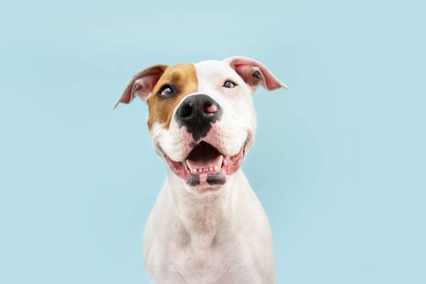

Perros en adopción
Descripción
Les presentamos a este hermoso y peludo canino, llegado desde las afueras de la cuidad, su antiguo dueño nos dice que necesita conseguirle un nuevo hogar a su fiel acompañante debido a que se tiene que ir del pais y lamentablemente no puede llevarlo con el, lo bañon le puso un moñito y unas flores para una linda sesion de fotos pre-adopcion. Con lo tierno que se ve es imposible decirle que no lo queres llevar; Personas interesadas por favor llenar la solicitud, como preferencia que viva en alguna casita o departamento grande, debido a que es un poco grande para espacios muy cerrados.

- Edad:3 años
- Le gustan los paseos
- Le encanta jugar con la pelota
Descripción
Este peludito amigo rescatado de las calles de la capital, esta en la busqueda de un nuevo hogar para llevar toda su energia y carisma. Es bastante obediente y protector, le gustan los paseos y que le acaricien la pancita, Es joven y extrovertido pero a su vez muy compañero; Ideal para quienes buscan perros no tan grandes para un departamento o casa chica. Disfrutaran muchisimo de su compañia y lo ayudaran a encontrar ese amor que ta da una familia que te quiere y que lastimosamente tanto les falta a esos animales en situacion de calle que podemos encontrar a menudo, en ocasiones enfermos y sin poder alimentarse bien.

- Edad:1 año
- Es muy saltarin y juguetón
- Le gusta correr con otros perros
Descripción
Winston, si, asi se llama este hermoso perrito con esa cabellera precios el cual aca le presentamos, sus dueños nos contactan para conseguirle una nueva casita a este cachorrito ya que por cuestiones de espacio y un nuevo bebe en camino, no pueden conservarlo. Nos comentan que es bastante dormilon y que le encantan los baños, que lo laven y le limpien su hermoso y largo pelo marron brillante. Disfruta mucho de los paseos y los juegos y aunque no es un perro enorme a pesar de su corta edad esta bastante estirado y pesadito; Ideal para esas personas que deseen estar con un animalito para todos lados.

- Edad:8 meses
- Es muy compañero y tranquilo
- Le gustan los baños
Descripción
Aca tenemos a este bello Pitbull fuerte y robusto, el cual recibimos luego de que algunos vecinos denuciaran a su antiguo dueño ya que solia llevarlo a esas horribles peleas clandestinas de perros. En la actualidad esta bastante sano, con algunas cicatrices y marcas que le dejo ese horrible pasado, pero en lineas generales mucho mas hermoso y en mejor estado que cuando lo recibimos; A pesar de que fue un animal que participo en bastantes peleas suele ser muy calmado, obediente y disfruta mucho de los espacios abiertos en los que puede correr, saltar y finalmente sentirse libre.
- Edad:3 años y medio
- Le encantan las galletas
- Es muy obediente
Descripción
Lo lindo y simpatico que puede llegar a ser un Bulldog Frances es increible, y aca tenemos una que entra perfecto en esa descripcion, querido como nunca por su antigua dueña, esta hermosa perrita esta en busca de un nuevo hogar para ir a jugar, saltar y correr. Lamentablemente por algunos problemas de salud, Patricia, su anterior dueña y compañera no puede seguir con ella y muy triste nos contacto para que la ayudaramos; Su unica exigencia para que alguien mas la pueda llevar, es que pueda tener el tiempo para atenderla y darle los cuidados que esta hermosa raza de perros en ocasiones amerita.

- Edad:5 años
- Es cariñoso y mimoso
- Le gusta mucho comer